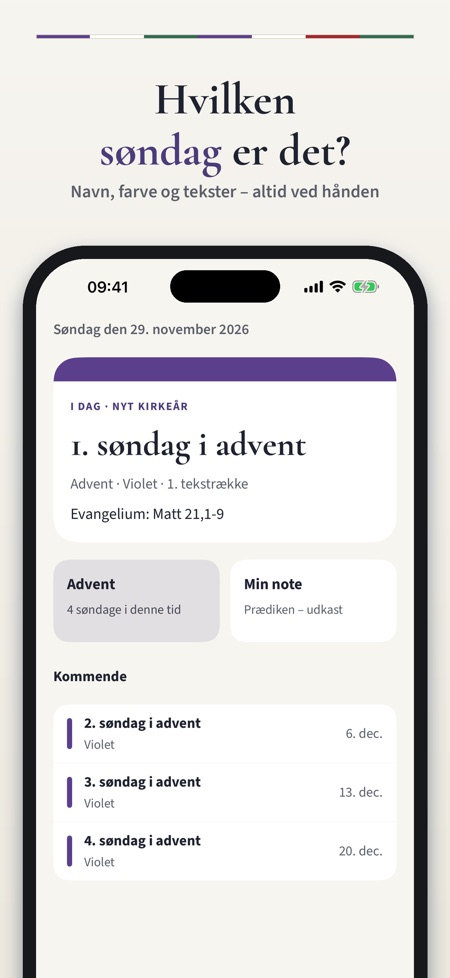
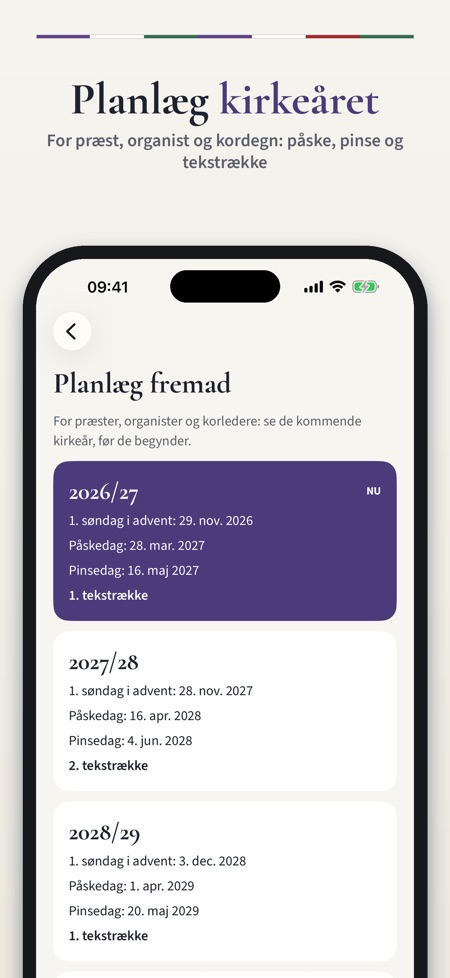
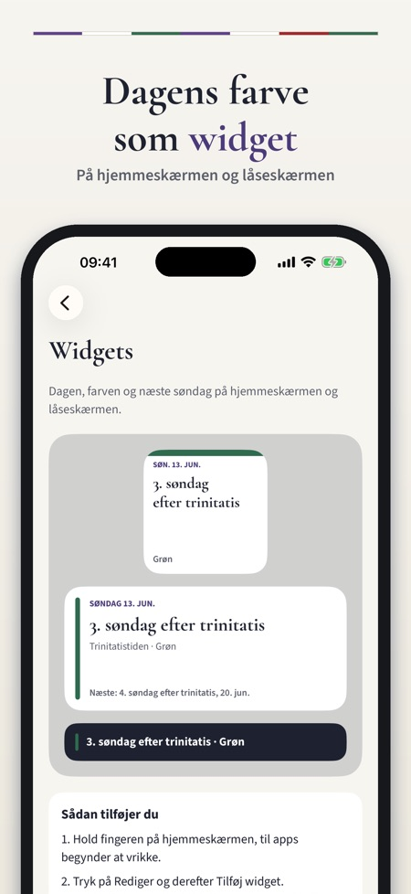

Prædiketekst, farver, højtider. Hvilken søndag er det, hvilke tekster og hvilken farve? Hele kirkeåret med folkekirkens to tekstrækker – også som widget. Nyt kirkeår begynder 29. november.



Alle søndage, tekster og liturgiske farver i Folkekirken – for præster, organister, kordegne, korledere og alle, der går i kirke. Hvilken søndag er det, hvilke tekster og hvilken farve? Kirkeåret har svaret altid ved hånden.
DAGEN I DAG
• Næste søndag eller helligdag med navn, liturgisk farve og tekstrække
• Evangeliet og de andre læsninger som bibelhenvisninger
• Kommende søndage og højtider
HELE KIRKEÅRET
• Alle søndage og helligdage fra første søndag i advent til sidste søndag i kirkeåret
• Ordnet efter kirkeårets tider: advent, jul, helligtrekongertid, faste, påske, pinse og trinitatis
• Bevægelige dage regnes ud på telefonen ud fra påskedatoen – der kræves ingen internet
TEKSTRÆKKERNE
• Folkekirkens to tekstrækker, med den række der bruges i år
• Se den anden række på hver dag
• Søg efter dag eller bibelbog, og kopiér henvisningerne
PLANLÆG
• Planlæg flere kirkeår frem: første søndag i advent, påske, pinse og tekstrække
• Noter til hver søndag – prædikenudkast, korplaner, huskesedler
• Påmindelse lørdag aften: søndagens navn, farve og evangelium
• Widgets til hjemmeskærmen og låseskærmen
• Delekort med dagen og teksterne til kirkebladet eller sociale medier
LÆR OM KIRKEÅRET
• Korte forklaringer om kirkeårets tider, de liturgiske farver, tekstrækkerne og påskedatoen
KØB
Dagens dag, kalenderen og teksterne for de næste 28 dage kan bruges uden køb. Et engangskøb låser hele kirkeåret op: teksterne for alle dage, begge tekstrækker, kommende kirkeår, noter og alle widgets. Den lille widget og påmindelsen lørdag aften kræver ikke køb. Købet kan deles med familien (Familiedeling). Intet abonnement, ingen reklamer, intet login.
Appen viser kun bibelhenvisninger, ikke bibeltekst. Kirkeåret er en uafhængig app og er ikke lavet af eller tilknyttet Folkekirken.
PRIVATLIV
Noterne gemmes kun på telefonen. Appen sender brugsstatistik uden navn, e-mail eller annonce-id via Google Analytics for Firebase (et tilfældigt app-id; for eksempel hvilke skærme og knapper der bruges, køb i appen og omtrentligt land), og det kan slås fra i Indstillinger.